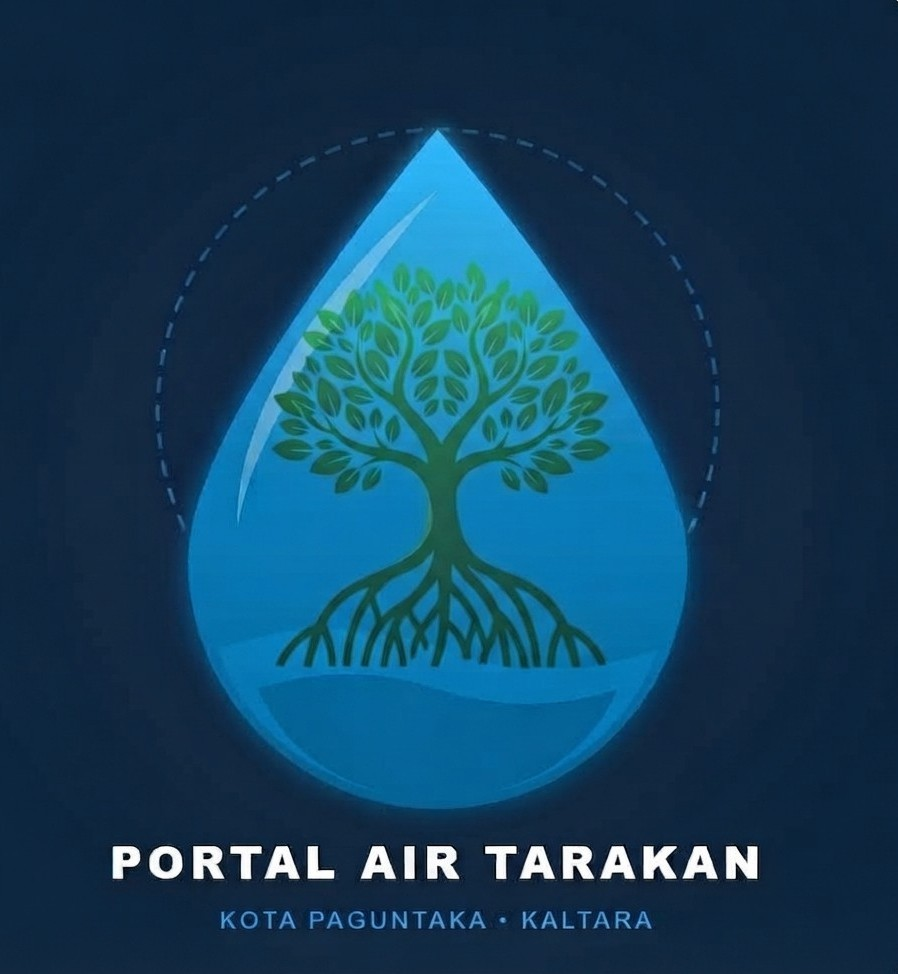
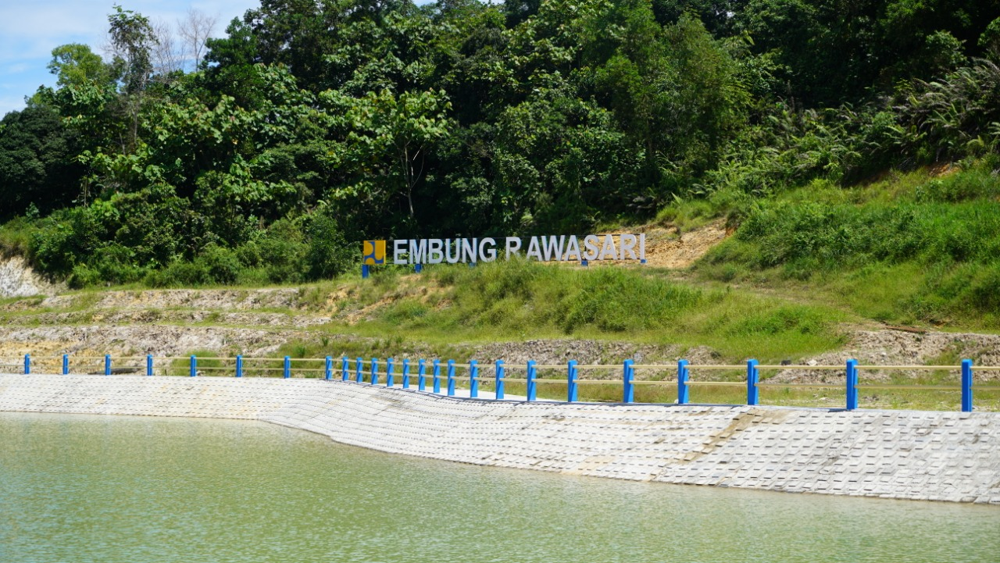
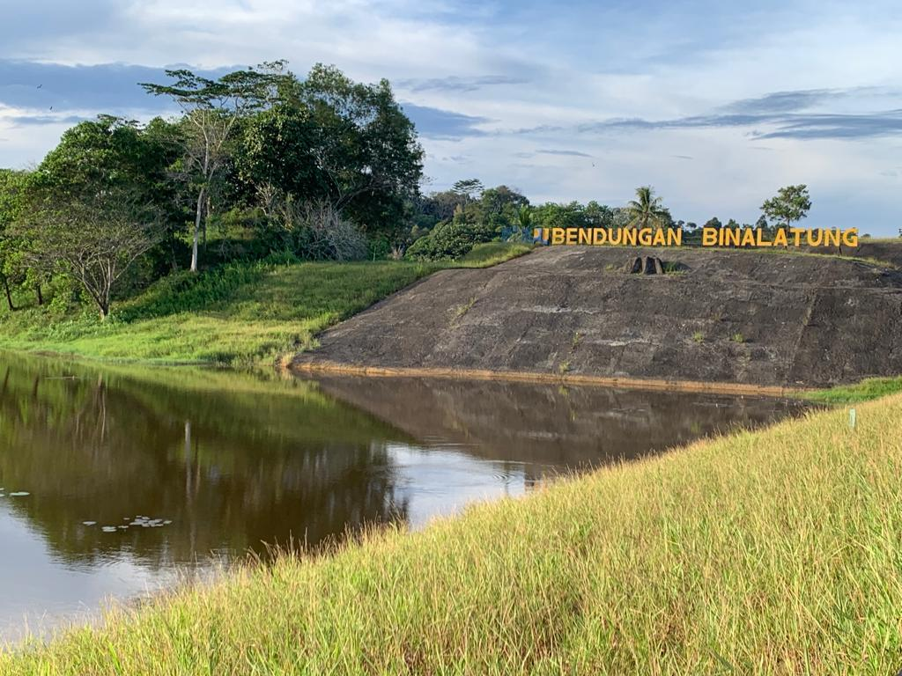
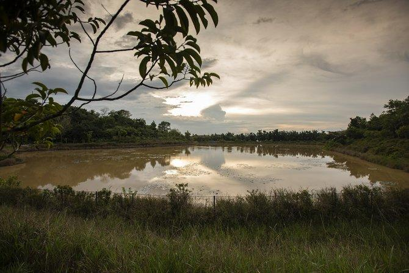
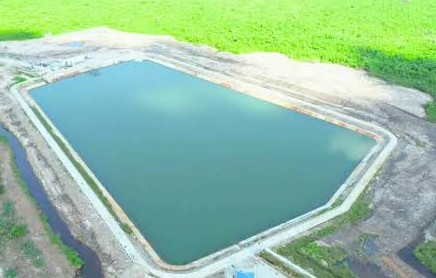

Ringkasan Status Air Kota Tarakan
- Total Titik Pantau: 4 Lokasi
- Status Air: Aktif & Terpantau

PORTAL AIR TARAKANLayanan untuk memantau ketersediaan air bersih dan melaporkan gangguan air di Kota Tarakan.
Data fasilitas air yang tersedia pada portal.

Status: Normal / Lancar
Wilayah: Tarakan Tengah
Debit air stabil dan distribusi air berjalan normal.

Status: Normal / Lancar
Wilayah: Tarakan Selatan
Pasokan air baku dalam kondisi normal.

Status: Perlu Cek
Wilayah: Tarakan Barat
Debit air perlu diperiksa secara berkala.

Status: Normal / Lancar
Wilayah: Tarakan Utara
Kapasitas pengolahan air berjalan normal.